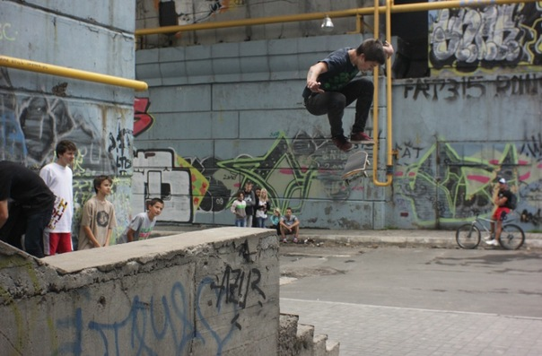
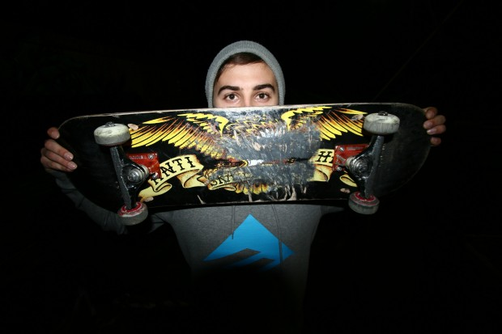

<?xml version="1.0" encoding="UTF-8"?>
<rss version="2.0"
	xmlns:content="../purl.org/rss/1.0/modules/content/default.htm"
	xmlns:wfw="../wellformedweb.org/CommentAPI/default.htm"
	xmlns:dc="../purl.org/dc/elements/1.1/default.htm"
	xmlns:atom="../www.w3.org/2005/Atom"
	xmlns:sy="../purl.org/rss/1.0/modules/syndication/default.htm"
	xmlns:slash="../purl.org/rss/1.0/modules/slash/default.htm"
	>

<channel>
	<title>Daily Weekend &#187; Интервью</title>
	<atom:link href="@feed=rss2&cat=3.html" rel="self" type="application/rss+xml" />
	<link>./</link>
	<description>Ukrainian online journal about skateboarders life</description>
	<lastBuildDate>Wed, 21 Mar 2012 10:53:10 +0000</lastBuildDate>
	<language>en</language>
	<sy:updatePeriod>hourly</sy:updatePeriod>
	<sy:updateFrequency>1</sy:updateFrequency>
	<generator>../wordpress.org/@v=3.0.5</generator>
		<item>
		<title>Daily Weekend закрывается</title>
		<link>@p=2134</link>
		<comments>@p=2134#comments</comments>
		<pubDate>Wed, 21 Mar 2012 10:51:38 +0000</pubDate>
		<dc:creator>admin</dc:creator>
				<category><![CDATA[Видео]]></category>
		<category><![CDATA[Интервью]]></category>
		<category><![CDATA[Новости]]></category>

		<guid isPermaLink="false">@p=2134</guid>
		<description><![CDATA[Спустя год работы, пришло время закрыть этот сайт. Это 348-ая новость, и этот показатель меня радует &#8211; сайт действительно обновлялся практически каждый день. Еще больше нравится то, что ¾ новостей были украинскими, у нас действительно стало все происходить чаще и &#8230; <a href="@p=2134.html">Продолжить чтение <span class="meta-nav">&#8594;</span></a>]]></description>
			<content:encoded><![CDATA[<p>Спустя год работы, пришло время закрыть этот сайт. Это 348-ая новость, и этот показатель меня радует &#8211; сайт действительно обновлялся практически каждый день. Еще больше нравится то, что ¾ новостей были украинскими, у нас действительно стало все происходить чаще и интересней, за это, конечно же, спасибо всем вам, ведь вы и делаете эти новости: катаетесь, снимаете, фотографируете, делаете что-то новое и вообще развиваете наше любимое дело в Украине.<br />
За этот год, было опубликованы разные новости, и одни из самых популярных хотелось бы повторить.<br />
<strong><a href="@p=161.html" target="_blank"> Пять самых суровых интро</a><br />
<a href="@p=214.html" target="_blank"> Свежая скейт-пресса, или как покупать журналы за 5 грн</a><br />
<a href="@p=242.html" target="_blank"> Скейтбординг и музыка. Хардкор</a></strong></p>
<p>Спасибо, что приходили на первый (<a href="@p=472.html" target="_blank">отчёт</a>, <a href="@p=554.html" target="_blank">видеоотчет</a>) и <a href="@p=1247.html" target="_blank">второй </a><strong><a href="@p=1247.html" target="_blank">Yard sale</a> от Daily Weekend</strong>. И читали интервью с <strong><a href="@p=809.html" target="_blank">Антоном Кулебой</a></strong> и <strong><a href="@p=986.html" target="_blank">Кириллом Шевченко</a></strong>.<br />
Спасибо за честные, правдивые, смешные, саркастические,  комментарии в самых обговариваемых темах ) Кто писал нечестные, несмешные и неправдивые, думаю, вы  и сами поймете. Самые обсуждаемые были<br />
<strong><a href="@p=2114.html" target="_blank"> Delta 9 / Episode 2</a><br />
<a href="@p=1758.html" target="_blank"> “Скейтпарк” в Белой Церкви</a><br />
<a href="@p=1622.html" target="_blank"> Видеоконтест от OKRUG</a></strong></p>
<p>Думаю, если бы сайт не закрывался, то последнее Спонсор Ми и побить рекорды по комментарием смог бы )</p>
<p>Да, и вообще спасибо, что терпели кривой дизайн и все недоделки.<br />
Все, что ни делается- все к лучшему! В апреле запустится новый проект, в котором выйдет реализовать, то, что в этом сделать не удавалось. Поэтому не забывайте заходить на страничку <a href="../vk.com/public25287352" target="_blank">вконтакте</a> и <a href="../www.facebook.com/DailyWeekend" target="_blank">фейсбуке</a>, что бы узнать первыми, что, когда и как будет называться. Всем спасибо, до встречи на спотах!</p>
]]></content:encoded>
			<wfw:commentRss>@feed=rss2&p=2134</wfw:commentRss>
		<slash:comments>6</slash:comments>
		</item>
		<item>
		<title>Интервью с Кириллом Шевченко</title>
		<link>@p=986</link>
		<comments>@p=986#comments</comments>
		<pubDate>Sat, 16 Jul 2011 12:59:31 +0000</pubDate>
		<dc:creator>admin</dc:creator>
				<category><![CDATA[Интервью]]></category>
		<category><![CDATA[Новости]]></category>

		<guid isPermaLink="false">@p=986</guid>
		<description><![CDATA[После очередной веселой ночки в Одессе, наконец-то вышло взять интервью у Кирилла. Этот парень обладает очень узнаваемым стилем, а трюки через nollie heel от него кажутся более легкими чем олли! <a href="@p=986.html">...</a>]]></description>
			<content:encoded><![CDATA[<p></p>
<p><em>После очередной веселой ночки в Одессе, наконец-то вышло взять интервью у Кирилла. Этот парень обладает очень узнаваемым стилем, а трюки через nollie heel от него кажутся более легкими чем олли!</em></p>
<p><strong>Кирилл Шевченко, 20 лет, угадал?</strong></p>
<p>Нет,  17 лет.</p>
<p><strong>Давно катаешься?</strong></p>
<p>Около 4 лет уже.</p>
<p><strong>Что сейчас с одесским скейтпарком?</strong></p>
<p>Да, вообще, жестко очень. Флет вообще, обещали сделать, а сейчас просто скалы там, нечего не поменяли.</p>
<p></p>
<p><em>Остатки одесского парка, слева от веника видно &#8220;идеальное&#8221; покрытие, но это не помешало сделать Кириллу идеальный krooked!</em></p>
<p><strong>Что бы ты поменял  в одесском скейтбординге, чего не хватает?</strong></p>
<p>Та блин, дружбы!</p>
<p><strong>Дружбы?</strong></p>
<p>Типы просто гниют…</p>
<p><strong>Как ты попал на спонсорство? Были ли до этого другие спонсоры?</strong></p>
<p>Нет, магазин Фрирайд был, но там вообще такое, обещали золотые горы, но нечего не вышло. Потом выиграл соревнования во Львове, снял нарезочку, и  взяли на флоу (Big Balls- прим. автора), вот так вот.</p>
<p><strong>Что ждать от тебя с командой? Промоделей , туров? Или ты пока просто получаешь доски?</strong></p>
<p>Пока просто доски.</p>
<p><strong>С кем-то с команды общаешься?</strong></p>
<p>Вообще неплотно.</p>
<p></p>
<p><strong>Что делаешь, когда не катаешься? Хобби какое-то, чем-то занимаешься?</strong></p>
<p>Играю в PS и пью пиво. Хах)</p>
<p><strong>Ты недавно в Киеве выиграл <a href="@p=798.html" target="_blank">Zero Street Session</a> в бенк, любишь участвовать в соревнованиях?</strong></p>
<p>Да!</p>
<p><strong>Скоро у вас Pringles Street Battle, будешь учавствовать?</strong></p>
<p>Да, конечно! Такой парк приезжает!</p>
<p><strong>У тебя на холодильнике магнит “Хватит бухать”, ты частый посетитель кутежей?</strong></p>
<p>(Смеется) Ну да. Каждый день себе говоришь все, но не получается)</p>
<p><strong>Какие жесткие ситуации были на врывах?</strong></p>
<p>Нассал в вентилятор, и на типа в лицо все это полетело)</p>
<p><strong>У тебя татуировка Piss Drunx, любишь эту тусовку, или это раньше было?</strong></p>
<p>Да, раньше было влияние.</p>
<p><strong>Что вообще про свои татуировки скажешь?</strong></p>
<p>Все нормально, не жалею.</p>
<p></p>
<p><strong>Какие планы на ближайшее будущее?</strong></p>
<p>Кататься, наслаждаться, никаких планов в принципе нет.</p>
<p><strong>Недавно выходил ролик с тобой, довольно неплохой, и там было три миллиона комментариев к нему. Как позитивных, так и негативных. Как ты вообще относишься к комментариям. Сейчас очень много комментируют, критикуют ,всем все не нравится</strong>.</p>
<p>Ну не знаю, может просто типы сами ни*уя не умеют,  просто сидят пи*дят, извините. А вообще нормально, должны обсирать конечно, как без этого.</p>
<p><strong>Ты вообще сильно над последним роликом старался?</strong></p>
<p>Ну, такое, катались просто. Сейчас хочу выпустить нормальный.</p>
<p><strong>От себя, или видео, какое-то снимаете?</strong></p>
<p>Нет, от себя, видео нет. Был тип, но он сгнил. Просто ролик со мной.</p>
<p><strong>Планируешь куда-то поехать?</strong></p>
<p>В Киев конечно.</p>
<p><strong>Что напоследок скажешь?</strong></p>
<p>Катайтесь, хватит бухать! И Борода нас кинул, очень жестко! ) Всем пока</p>
]]></content:encoded>
			<wfw:commentRss>@feed=rss2&p=986</wfw:commentRss>
		<slash:comments>3</slash:comments>
		</item>
		<item>
		<title>Интервью с Антоном Кулебой</title>
		<link>@p=809</link>
		<comments>@p=809#comments</comments>
		<pubDate>Sun, 05 Jun 2011 19:20:37 +0000</pubDate>
		<dc:creator>admin</dc:creator>
				<category><![CDATA[Интервью]]></category>
		<category><![CDATA[Новости]]></category>

		<guid isPermaLink="false">@p=809</guid>
		<description><![CDATA["А вообще для меня скейтбординг, это как чистить зубы, если я перестану чистить их, то начну вонять. Так и скейтбординг – это большая часть моей жизни!" <a href="@p=809.html">...</a>]]></description>
			<content:encoded><![CDATA[<p><em>Фото &#8211; Женя Доканин</em></p>
<p><strong>Привет! Представься, сколько тебе лет, как давно катаешься?</strong><br />
Антон Кулеба, мне 24 года, последние три года катаюсь плотно, а начал кататься 9 с половиной лет назад.<br />
<strong>А как начал?</strong><br />
Как начал… Как я начал кататься? (минута молчания) Ааа, Сидж пришел в школу, мы учились с ним  первые классы, потом он ушел, опять пришел, с доской, на которой на месте делал triple flip. Он мне дал толчок в катании.<br />
<strong>Ты живешь за Киевом, расскажи какие там плюсы и минусы?</strong><br />
Вишня (Вишневое), классный город, там тихо, можно сказать с намеком на европейский город.<br />
<strong>А минусы?</strong><br />
Минусы – постоянно бухают на лавках, а в центре, ты выходишь, а там чувачки на машинах  спорт костюмах, вдоль дороги разговаривают, все дела.<br />
<strong>Спарко и Момо?))</strong><br />
Да – да (смеется). А вообще много молодёжи, модников.<br />
<strong>Расскажи про локальную скейтовую тусовку в Вишневом, как там скейтбординг развит?</strong><br />
Были там такие скейтеры как Гармон и Белка, крутые, но вот сейчас я их не вижу, но вот Женя Головин и Вова Севастополь – нормальные ребята, со своим чувством юмора и стилем. Да и вообще тусовка хорошая.<br />
<strong>Как тебе в 24 года продолжать кататься, почему не останавливаешься, что поменялось? И как взгляд на скейтбординг изменился с момента, когда ты 9 лет назад начал кататься и до сегодняшнего дня?</strong><br />
Вообще все поменялось! По другому все, тогда ты ехал с гордостью на скейте, по тротуару и знал, что ты один из тех немногих, кто катается на скейте, люди все оборачивались с удивлением “Ооо, скейтборд, интересно”, гордость брала. А сейчас все иначе, массмаркетом каким-то становится…</p>
<p><em>BS Nosegrind. Фото &#8211; Женя Доканин </em></p>
<p><em><br />
</em><br />
<strong>А что тебя подталкивает продолжать кататься?</strong><br />
Для меня, это как какой то ребус, я его разгадываю, потихоньку учусь трюки делать. А вообще для меня скейтбординг, это как чистить зубы, если я перестану чистить их, то начну вонять. Так и скейтбординг – это большая часть моей жизни!<br />
<strong>А чем еще занимаешься, помимо скейтбординга?</strong><br />
Помимо скейтбориднга, занимаюсь растениями )<br />
<strong>Ваааауууу!) Ты озеленяешь планету – это классно!</strong><br />
Да, несу радость людям )<br />
<strong>А какие планы на лето, которое так скоро?</strong><br />
Помимо катания, хочу отведать заграницу. Хочу поехать к своему другу в Барселону, очень давно уже ждет и зовет.<br />
<strong>Расскажи про видео. Какие на тебя повлияли сильно, и какие последние тебе понравились?</strong><br />
Первое и любимое видео – это “Катарсис”, которое для меня изменило все. Эти люди для меня стали… Как сейчас для некоторых Stay Gold (Emerica), так для меня тогда был Катарсис. Дима Рыбак, Вадим Юзба, Виталий Хорольский, все – Шева, Тарас, для меня это было мега, я такого не видел. Тогда возможности не было, не было интернета, всего этого.<br />
<strong>А зарубежное?</strong><br />
Зарубежное, из старых – One step beyond (Adio) дошел до меня как то и я его очень заценил. Так же постоянно смотрел Chomp on This тот же, очень крутое.<br />
<strong>Из последних?</strong><br />
Последнее, однозначно – Alien Workshop “Mind Field” , очень крутое. Ну и Stay Gold само собой, очень качественное и красивое.<br />
<strong>Кого бы из Украины выделил бы? Кто валит, у кого крутой стиль?</strong><br />
Из украинских самых любимых моих скейтеров – это Никита Кузьменко “Перец”, потому что у него стиль нереально крутой, мне очень нравится. Он катается с душой, хотя последнее время редко это делает. А вообще все с кем я катаюсь – ты, Жека Кюне; я от него много чему учусь, тот же менуал я сегодня делал и иначе бы я его не доделал бы. Я вот знаю, что Женя пока не доделает со спота он не уходит, настырный, ну что я зря пришел и час колбашусь, а потом взять и уйти. Вот в этом он очень мне припер подает и  в стиле тоже. Да все крутые: Доманский, Кузьмич, Тевкун, Палка, Папай, Пашуля,Клима, Вадим Юзба ,Маньяк – это киевский отдельный стиль, который нравится! Это катание с душой, это не скейтпарк – это улица!</p>
<p><em>Фото &#8211; Вова Гвоздь</em></p>
<p><em><br />
</em><br />
<strong>Ты стильный и красивый, девочки постоянно смотрят на тебя ))) Были у тебя какие-то забавные случаи по этому поводу?</strong><br />
Иногда просили сфотографироваться, хотя я думаю такое у каждого бывает. А недавно мне Вова говорит: “А ты знаешь такую вот девочку?”, “Нет”, “А она тебя хочет )))”<br />
<strong>Какую музыку посоветуешь читателям. Какую слушаешь сейчас?</strong><br />
Одни из моих любимых групп – это Wolfmother, The Brian Jonestown Massacre, Lynyrd Skynyrd, нравится еще Dinosaur Jr., голос очень классный, гитара. А вообще катаюсь, под спокойную, ненапряжную музыку, она меня концентрирует. Хотел бы попасть на концерт The Killers, The National и какие-то шоу – Kiss, Iron Maiden.<br />
<strong>А украинские группы? Или они пока еще не родились?</strong><br />
Quinsberry shot хорошая группа,Pur:Pur. А из популярных не знаю, я телевизор не смотрю, не могу судить. Крихітка Цахес, из популярних, нормальная штука.<br />
<strong>Ясно. Твой сетап на данный момент, на чем ты катаешься?</strong><br />
Доска Slave 8,12,подвески Thunder 147&#8243;, колеса Pig 53мм, хочу очень колеса Satori . Mometum колеса хотел попробывать, так и не дошло дело заказать. Ну из колеса, лучшие на каких я катался – это Satori. Подшипники раз  на раз не приходятся, один раз пачка идеальная, другой вообще  разлетаюся быстро.<br />
<strong>А какие кеды нравятся, в каких сейчас катаешься?</strong><br />
Последнее время катаюсь в Nike SB, четвёртая пара и отлично, удобные и дольше держаться. Они дороже, но хорошо держаться и пятка не отбивается. А вообще еще Vans нравится, в Chukka Low нравилось кататься. Хотелось бы Adidas попробовать.</p>
<p><em>Fakie b/s flip 270. Фото &#8211; Вова Гвоздь</em></p>
<p><em><br />
</em><br />
<strong>Что тебе вообще хотелось бы сказать напоследок?</strong><br />
Скейтбординг такая штука, вообще спасибо Богу за скейтбориднг, кто-то парится, ищет спортзалы, что бы занять себя физически или кружок домино, не то, чтобы мне заняться нечем, я просто хочу кататься постоянно! И, даже, не скользить, флипы делать; нравится с чуваками по даунхилам гонять, на большой скорости – круто! Гонять по Киеву – это кайф, когда своя компания людей, которых ты  знаешь давно. Вообще это очень крутое времяпровождение.<br />
Хочу посоветовать, не делать из скейтбориднга войну, он должен объединять, а не разделять. Неприятно читать комментарии на сайтах, кто-то плохой, кто-то хороший, зачем? Тем более это пишут, те люди, которых мы не видим, не знаю, может они хотят попасть в тусовку, выделиться, но это дичь.<br />
<strong>Ну, а теперь приветы.</strong><br />
Спасибо за интервью. Привет Ярославу Дамброскому “Сиджу”, моему другу в Барселону, привет Жеке Кюне в Донецк, привет “Перцу” в Варшаву. Большой привет: Пашуле, Доманскому,Мане, Палке, Папаю, Кузьмичу, Тевкуну; Демону, Юзбе  спасибо за тот скейтборидинг, который мы имеем! Привет Максиму Булале – катайся почаще, Илье Клименко в Нью Йорк. Я наверно всех сейчас не вспомню, привет всем кого я знаю,с катаю,вижусь,слышусь!<br />
<strong>Спасибо тебе за интервью! Надеюсь, ты нас еще порадуешь фото и видео, хоть это и не главное.</strong><br />
Да! Roll Forever! Давай пять!</p>
<p>Профайл Антона Кулебы смотрите в &#8220;<a href="../skater.kiev.ua/video/video_ua/films_ua/1508-klava-jeto-tvojj-luchshijj-den-2010.html" target="_blank">Клава, это твой лучший день!</a>&#8220;</p>
]]></content:encoded>
			<wfw:commentRss>@feed=rss2&p=809</wfw:commentRss>
		<slash:comments>6</slash:comments>
		</item>
		<item>
		<title>Brandon Westgate Epicly Later’d часть 2</title>
		<link>@p=610</link>
		<comments>@p=610#comments</comments>
		<pubDate>Thu, 19 May 2011 21:00:57 +0000</pubDate>
		<dc:creator>admin</dc:creator>
				<category><![CDATA[Видео]]></category>
		<category><![CDATA[Интервью]]></category>
		<category><![CDATA[Новости]]></category>

		<guid isPermaLink="false">@p=610</guid>
		<description><![CDATA[Вторая часть видео про Brandon Westgate <a href="@p=610.html">...</a>]]></description>
			<content:encoded><![CDATA[<p>Вторая <a href="@p=572.html" target="_blank">часть</a> про жизнь Brandon Westgate. Архивные материалы времен его катания за <a href="../www.5boro.com/default.htm">5 boro</a> и куча интересной информации.</p>
<p><script src="../www.vbs.tv/vbs_player.js@width=620&height=348&ec=JxdjlnMjpk-6YK7xqRgdGI9NdIvyXuM7&st=Epicly%20Later%27d%20--%20Season%20Three&#038;pl=http://www.vbs.tv/watch/epicly-later-d-season-three--2/epicly-later-d-brandon-westgate-ep-2" type="text/javascript" charset="utf-8"></script></p>
]]></content:encoded>
			<wfw:commentRss>@feed=rss2&p=610</wfw:commentRss>
		<slash:comments>0</slash:comments>
		</item>
		<item>
		<title>Brandon Westgate Epicly Later&#8217;d часть 1</title>
		<link>@p=572</link>
		<comments>@p=572#comments</comments>
		<pubDate>Sun, 15 May 2011 10:09:41 +0000</pubDate>
		<dc:creator>admin</dc:creator>
				<category><![CDATA[Видео]]></category>
		<category><![CDATA[Интервью]]></category>
		<category><![CDATA[Новости]]></category>

		<guid isPermaLink="false">@p=572</guid>
		<description><![CDATA[Новый сезон Epicly Later’d стартовал! Лучший способ узнать о жизни самых интересных скейтеров. Итак, первая часть Epicly Later’d- Brandon Westgate. <a href="@p=572.html">...</a>]]></description>
			<content:encoded><![CDATA[<p>Новый сезон Epicly Later’d стартовал! Лучший способ узнать о жизни самых интересных скейтеров. Как всегда, эту возможность нам дает известный <a href="epiclylaterd.com/" target="_blank">фотограф</a> и <a href="../vimeo.com/user287650/videos" target="_blank">режиссер</a> <a href="../www.patrickodell.com/default.htm" target="_blank">Patrick O&#8217;Dell</a>. На его счету клип для <a href="../en.wikipedia.org/wiki/Morrissey" target="_blank">Morrissey</a>, <a href="../en.wikipedia.org/wiki/Panda_Bear_(musician)" target="_blank">Panda Bear</a>, <a href="../en.wikipedia.org/wiki/No_Age" target="_blank">No Age</a> и, конечно же, ни один сезон Epicly Later’d про Andrew Reynolds, Kevin Long, Dylan Rieder, Jamie Thomas, Jason Dill, Jake Phelps и других. Итак, первая часть Epicly Later’d- Brandon Westgate.</p>
<p><script src="../www.vbs.tv/vbs_player.js@width=620&height=348&ec=x5bDVnMjopj5O6pimXYWxzj3q3fLhtBI&st=Epicly%20Later%27d%20--%20Season%20Three&#038;pl=http://www.vbs.tv/watch/epicly-later-d-season-three--2/el_brandon_westgate_part_01_" type="text/javascript" charset="utf-8"></script></p>
]]></content:encoded>
			<wfw:commentRss>@feed=rss2&p=572</wfw:commentRss>
		<slash:comments>0</slash:comments>
		</item>
		<item>
		<title>Любимые профайлы. Нефёдов Артём</title>
		<link>@p=532</link>
		<comments>@p=532#comments</comments>
		<pubDate>Wed, 11 May 2011 20:22:02 +0000</pubDate>
		<dc:creator>admin</dc:creator>
				<category><![CDATA[Видео]]></category>
		<category><![CDATA[Интервью]]></category>
		<category><![CDATA[Новости]]></category>

		<guid isPermaLink="false">@p=532</guid>
		<description><![CDATA[Артём расскажет Вам о любимых профайлах <a href="@p=532.html">...</a>]]></description>
			<content:encoded><![CDATA[<p></p>
<p>Привет, меня зовут Нефёдов Артём, живу в Днепропетровске, на доске с 2004 года. Представляю такие бренды как <a href="../transfersb.com/glavnaa.html">Transfer skateboards</a>, Metal trucks и <a href="../www.zdesparty.com/default.htm">ZДESparty</a>. Также работаю в компании <a href="../transferskateshop.com/default.htm">Transfer skateshop</a>.</p>
<p>Топ 5 (в рандомном порядке)</p>
<p>1. Andrew Reynolds, Bryan Herman, Kevin Long, <a href="../www.skatevideosite.com/skatevideos/emerica-this-is-skateboarding/soundtrack" target="_blank">Emerica &#8211; This is skateboarding</a>. Когда-то давным-давно, в одном из киевских туров, Шева подарил мне видеокассету, на которой было 2 видео: Emerica &#8211; This is skateboarding и <a href="../www.skatevideosite.com/skatevideos/black-label-blackout/soundtrack" target="_blank">Black Label &#8211; Black out</a>. Я с уверенностью могу сказать, что на то время эти видео оказали существенное влияние на моё понимание скейтбординга.</p>
<p><iframe width="620" height="383" src="www.youtube.com/embed/_G1qo0lPJfs" frameborder="0" allowfullscreen></iframe></p>
<p><iframe width="620" height="383" src="www.youtube.com/embed/J4NBGBWbQIY" frameborder="0" allowfullscreen></iframe></p>
<p><iframe width="620" height="383" src="www.youtube.com/embed/NYeJSX_4rLg" frameborder="0" allowfullscreen></iframe></p>
<p>2. Eric Koston, <a href="../www.skatevideosite.com/skatevideos/girl-yeah-right/soundtrack" target="_blank">Girl-Yeah Right</a>. Поразительная техника и стиль. Инновационная съемка и эффекты. И конечно же легендарный Фростон)</p>
<p><iframe width="620" height="495" src="www.youtube.com/embed/lJnbBi-95T0" frameborder="0" allowfullscreen></iframe></p>
<p>3. REYNOLDS, Herman, Westgate, <a href="../www.skatevideosite.com/skatevideos/emerica-stay-gold/soundtrack" target="_blank">Emerica &#8211; Stay Gold</a>. Я не могу, и даже не просите, выбрать кого-то из этих трех.</p>
<p>Просмотрев первый раз профайл Вестгейта, я поставил видео на паузу, сердце колотилось с бешеной скоростью, а в голове был только один вопрос &#8220;Что это черт побери только что было!?&#8221;. Нереальный щелчок, скорость и неистовство &#8211; это Брендон Вестгейт. Дальше начинается партия моего любимого Хермана. Оригинальные проезды на территории колледжа под супер наркоманскую музыку, бешеная амплитуда и неповторимый стиль Хермана. Понравилось. Но все же хотелось banging! И второй профайл по бессмертного Оззи полностью удовлетворил это желание. Просто посмотрите первое нолли тре и вы все поймете. Все оставшееся видео я чувствовал интригу, я знал, что Boss покажет. И позже выяснилось, что Рейнолдс не только показал, но и наказал Всех! Я с полностью уверен, что 90% трюков из его профайла, могли бы претендовать на лучший трюк в любом профайле и в любом видео. Рейнолдс снял настолько мощный профайл, почти полностью состоящий из hammer трюков, что он будет поражать воображение скейтеров во все времена. Больше всего удивляет то, что Рейнолдсу немало лет по меркам скейтбординга, он состоятельный бизнесмен, он отец, он легенда, и казалось бы, что еще ему доказывать, когда все знаю что он лучший. Ответ кроется в названии видео &#8211; STAY GOLD- это про Эндрю Рейнолдса. Аминь)</p>
<p><em>Примечание- Я думаю, это видео все недавно видели, выкладывать профайлы смысла нет</em></p>
<p>4. Cody McEntire, <a href="../www.skatevideosite.com/skatevideos/digital-smoke-and-mirrors/soundtrack" target="_blank">Digital-Smoke &amp; Mirrors</a>. Просто поразительная техника и амплитуда гепов. Сложнейшие трюки, массивные гепы, сложные проезды. И, конечно, ни с кем не сравнимый стиль &#8220;коротышки&#8221; Коди )</p>
<p><iframe width="620" height="495" src="www.youtube.com/embed/2IOLsARFwXk" frameborder="0" allowfullscreen></iframe></p>
<p>5. Marc Jonson, <a href="../www.skatevideosite.com/skatevideos/lakai-fully-flared/soundtrack">Lakai-Fully Flared</a>. Вы спросите, почему именно этот парень, ведь в этом видео куча крутых парней с крутыми профайлами? Я отвечу так, скейтбординг &#8211; это не всегда свич трешка с даблсэта. Иногда скейтбординг &#8211; это рыжая борода, маленькая забавная шапочка и ноусблант под дождем, и конечно же атмосферность.</p>
<p><iframe width="620" height="495" src="www.youtube.com/embed/QpKoGSKFTRI" frameborder="0" allowfullscreen></iframe></p>
<p><iframe width="620" height="495" src="www.youtube.com/embed/u3i7Usu-Gk0" frameborder="0" allowfullscreen></iframe></p>
<p>Всем писуха!</p>
<p>Катайте, любите, творите!</p>
]]></content:encoded>
			<wfw:commentRss>@feed=rss2&p=532</wfw:commentRss>
		<slash:comments>1</slash:comments>
		</item>
		<item>
		<title>Интервью с Ty Evans</title>
		<link>@p=438</link>
		<comments>@p=438#comments</comments>
		<pubDate>Tue, 03 May 2011 10:01:36 +0000</pubDate>
		<dc:creator>admin</dc:creator>
				<category><![CDATA[Видео]]></category>
		<category><![CDATA[Интервью]]></category>
		<category><![CDATA[Новости]]></category>

		<guid isPermaLink="false">@p=438</guid>
		<description><![CDATA[Интервью с создателем The Twins от Skateboarder Magazine. Вы узнаете подробности съемок нашумевшего ролика про скейтеров близнецов, плюс первая информация о Girl/ Chocolate video от Ty Evans <a href="@p=438.html">...</a>]]></description>
			<content:encoded><![CDATA[<p>Интервью с создателем  <a href="@p=373.html">The Twins</a> от <a href="../www.skateboardermag.com/default.htm">Skateboarder Magazine</a>. Вы узнаете подробности съемок нашумевшего ролика про скейтеров близнецов, плюс первая информация о Girl/ Chocolate video от Ty Evans.</p>
<p><object width="620" height="349"><param name="allowfullscreen" value="true" /><param name="allowscriptaccess" value="always" /><param name="movie" value="../vimeo.com/moogaloop.swf@clip_id=23142005&amp;server=vimeo.com&amp;show_title=0&amp;show_byline=0&amp;show_portrait=0&amp;color=00adef&amp;fullscreen=1&amp;autoplay=0&amp;loop=0" /><embed src="../vimeo.com/moogaloop.swf@clip_id=23142005&amp;server=vimeo.com&amp;show_title=0&amp;show_byline=0&amp;show_portrait=0&amp;color=00adef&amp;fullscreen=1&amp;autoplay=0&amp;loop=0" type="application/x-shockwave-flash" allowfullscreen="true" allowscriptaccess="always" width="620" height="349"></embed></object></p>
]]></content:encoded>
			<wfw:commentRss>@feed=rss2&p=438</wfw:commentRss>
		<slash:comments>0</slash:comments>
		</item>
		<item>
		<title>Panda Bear/The Goat интервью для Altamont</title>
		<link>@p=128</link>
		<comments>@p=128#comments</comments>
		<pubDate>Tue, 29 Mar 2011 15:24:40 +0000</pubDate>
		<dc:creator>admin</dc:creator>
				<category><![CDATA[Видео]]></category>
		<category><![CDATA[Интервью]]></category>
		<category><![CDATA[Новости]]></category>

		<guid isPermaLink="false">@p=128</guid>
		<description><![CDATA[Скейтбориднг всегда был намного шире и глубже, чем просто учится трюки у себя во дворе. А компания Altamont никогда не скрывала свою любовь к музыке, и всегда поддерживала интересных музыкантов и фестивали. Предлагаем вам посмотреть интересное видео-интревью с Panda Bear и The Goat <a href="@p=128.html">...</a>]]></description>
			<content:encoded><![CDATA[<p></p>
<p>Скейтбориднг всегда был намного шире и глубже, чем просто учится трюки у себя во дворе. А компания <a href="../altamontapparel.com/default.htm">Altamont</a> никогда не скрывала свою любовь к музыке, и всегда поддерживала интересных музыкантов и фестивали. Предлагаем вам посмотреть интересное видео-интревью с <a href="../www.myspace.com/pandabear">Panda Bear</a> и <a href="../www.myspace.com/thegoat">The Goat</a>, которых спонсирует Altamont. Состав The Goat вообще звездный: ATIBA JEFFERSON, KEVIN &#8220;SPANKY&#8221; LONG, ANDREW REYNOLDS, SHANE HEYL и BEAGLE oneISM. Приятного просмотра!</p>
<p><object width="630" height="354"><param name="allowfullscreen" value="true" /><param name="allowscriptaccess" value="always" /><param name="movie" value="../vimeo.com/moogaloop.swf@clip_id=21622030&amp;server=vimeo.com&amp;show_title=1&amp;show_byline=1&amp;show_portrait=1&amp;color=00adef&amp;fullscreen=1&amp;autoplay=0&amp;loop=0" /><embed src="../vimeo.com/moogaloop.swf@clip_id=21622030&amp;server=vimeo.com&amp;show_title=1&amp;show_byline=1&amp;show_portrait=1&amp;color=00adef&amp;fullscreen=1&amp;autoplay=0&amp;loop=0" type="application/x-shockwave-flash" allowfullscreen="true" allowscriptaccess="always" width="630" height="354"></embed></object></p>
]]></content:encoded>
			<wfw:commentRss>@feed=rss2&p=128</wfw:commentRss>
		<slash:comments>0</slash:comments>
		</item>
	</channel>
</rss>
